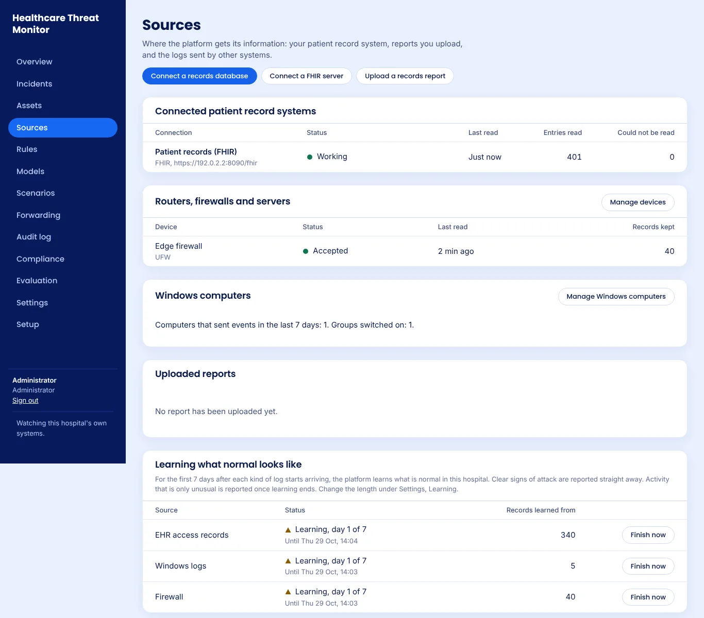

How it works
Hospitals are attacked because their records are valuable and their systems cannot stop. Most cannot afford a security team watching around the clock. This platform does the watching and leaves the decisions to people.
Collect
Reads who opened which patient record, and the logs of Windows computers, routers, firewalls and servers.
Detect
Rules catch clear signs of attack, such as backups being deleted. Models learn what is normal in this hospital and flag what is not.
Review
Related warnings are joined into one incident with the evidence behind it, so an analyst sees the whole story at once.
Respond
A person approves every action, such as cutting a computer off the network. Every step is kept in a tamper evident audit log.
Install with clicks
Download one file from the latest release. When it starts, its screen shows the address to open and a setup code. Open that address in a browser on another computer, enter the code, and set up the first administrator. Nothing is typed in a terminal.
VirtualBox or VMware .ova
- Choose File, Import Appliance, and pick the file.
- Set its network to Bridged.
- Start it.
Hyper-V hyperv.zip
- Unzip it and make a Generation 2 virtual machine with the disk inside.
- Set Secure Boot to Microsoft UEFI Certificate Authority.
- Start it.
A spare computer usb.img.xz
- Write it to a USB stick with balenaEtcher or Rufus.
- Start the computer from the stick.
- Choose the disk and type ERASE.
Needs 2 processors, 4 GB of memory and 20 GB of disk. Each release lists a checksum for every file. Hospitals already running Docker can use it on their own Linux server instead; see the install guide.
What it watches
After installing, a setup wizard and short forms connect each source. A seven day learning period teaches it what is normal in your hospital, while clear signs of attack are reported from day one.
- Patient record access, through a read only connection to the record system's database, its FHIR server, or an uploaded report.
- Windows computers, through a small, readable collector installed from one downloaded file.
- Routers, firewalls and servers, which send their logs to a built in receiver once an administrator accepts them.

Built to be trusted with a hospital
Stays in the hospital
Everything runs on the hospital's own computer. Nothing is sent to the project or to anyone else.
Strong sign in
Every account needs a password and an authenticator app. Accounts lock after repeated failures.
Every action recorded
A chained audit log shows any change to past entries, and can be checked independently.
Open to inspection
The code, the tests and a written threat model are public, under the Apache License 2.0.
OpenSSF Best Practices
The project meets the passing criteria of the Open Source Security Foundation's Best Practices programme.
Checked on every change
Automated tests, including a real Windows computer and full installs, plus CodeQL security scanning, run on every change.
Dependencies kept current
Dependency updates are proposed weekly, and each release lists the vulnerabilities it fixed in the change log.
Private security reports
Security problems are reported privately through GitHub, as the security policy describes.
Where the project stands
This is a research prototype, not yet a finished product for live clinical use.
- It has been tested on simulated and sample data. It has not yet run in a real hospital.
- It has not had an independent security review.
- The virtual machine and USB installer are tested automatically in an emulator for every release. They have not yet been tried by a hospital.
Hospitals are welcome to try it and review the code. Please do not connect it to real patient systems until it has been piloted and reviewed for your setting.
Read more
Get in touch
Hospitals interested in a pilot, and security researchers with findings, can open an issue on GitHub. Please report security problems privately, as described in the project's security policy.